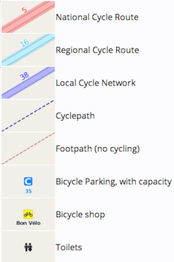

<!DOCTYPE html>
<html>
<head>
	<title>Bike West Hartford</title>
	<meta name="viewport" content="width=device-width, initial-scale=1.0">
	<meta charset="utf-8">
	<link rel="shortcut icon" href="favicon.ico">
	<!-- load Bootstrap CSS for mobile devices -->
		<link rel="stylesheet" href="https://stackpath.bootstrapcdn.com/bootstrap/3.4.1/css/bootstrap.min.css"
		integrity="sha384-HSMxcRTRxnN+Bdg0JdbxYKrThecOKuH5zCYotlSAcp1+c8xmyTe9GYg1l9a69psu"
		crossorigin="anonymous">
	<!-- Load Leaflet from CDN-->
		<link rel="stylesheet" href="https://unpkg.com/leaflet@1.6.0/dist/leaflet.css"
		integrity="sha512-xwE/Az9zrjBIphAcBb3F6JVqxf46+CDLwfLMHloNu6KEQCAWi6HcDUbeOfBIptF7tcCzusKFjFw2yuvEpDL9wQ=="
		crossorigin=""/>
		<script src="https://unpkg.com/leaflet@1.6.0/dist/leaflet.js"
  	integrity="sha512-gZwIG9x3wUXg2hdXF6+rVkLF/0Vi9U8D2Ntg4Ga5I5BZpVkVxlJWbSQtXPSiUTtC0TjtGOmxa1AJPuV0CPthew=="
  	crossorigin=""></script>
	<!-- load jQuery  -->
		<script
		src="https://code.jquery.com/jquery-3.4.0.min.js"
		integrity="sha256-BJeo0qm959uMBGb65z40ejJYGSgR7REI4+CW1fNKwOg="
		crossorigin="anonymous"></script>
	<!-- Load Esri Leaflet from CDN -->
		<script src="https://unpkg.com/esri-leaflet@2.5.0/dist/esri-leaflet.js"
		integrity="sha512-ucw7Grpc+iEQZa711gcjgMBnmd9qju1CICsRaryvX7HJklK0pGl/prxKvtHwpgm5ZHdvAil7YPxI1oWPOWK3UQ=="
		crossorigin=""></script>
	<!-- load Font-Awesome -->
		<link rel="stylesheet" href="https://cdnjs.cloudflare.com/ajax/libs/font-awesome/4.6.3/css/font-awesome.min.css">
	<!-- load Leaflet.locatecontrol https://github.com/domoritz/leaflet-locatecontrol -->
		<link rel="stylesheet" href="https://cdnjs.cloudflare.com/ajax/libs/leaflet-locatecontrol/0.72.0/L.Control.Locate.min.css" />
		<script src="https://cdnjs.cloudflare.com/ajax/libs/leaflet-locatecontrol/0.72.0/L.Control.Locate.min.js"></script>
	<!-- load Leaflet-plugins to read GPX and KML https://github.com/shramov/leaflet-plugins-->
		<script src="https://cdnjs.cloudflare.com/ajax/libs/leaflet-plugins/3.3.1/layer/vector/GPX.min.js"></script>
		<script src="https://cdnjs.cloudflare.com/ajax/libs/leaflet-plugins/3.3.1/layer/vector/KML.min.js"></script>
	<!-- Esri Leaflet Geocoder -->
		<link rel="stylesheet" href="https://unpkg.com/esri-leaflet-geocoder@2.3.3/dist/esri-leaflet-geocoder.css"
		integrity="sha512-IM3Hs+feyi40yZhDH6kV8vQMg4Fh20s9OzInIIAc4nx7aMYMfo+IenRUekoYsHZqGkREUgx0VvlEsgm7nCDW9g=="
		crossorigin="">
		<script src="https://unpkg.com/esri-leaflet-geocoder@2.3.3/dist/esri-leaflet-geocoder.js"
		integrity="sha512-HrFUyCEtIpxZloTgEKKMq4RFYhxjJkCiF5sDxuAokklOeZ68U2NPfh4MFtyIVWlsKtVbK5GD2/JzFyAfvT5ejA=="
		crossorigin=""></script>
  <!-- Load text-path Leaflet plugin to add arrows to polylines -->
  	<script src="src/polyline-textpath.js"></script>
	<!-- load compass from local directory -->
		<link rel="stylesheet" href="src/leaflet-compass.css"/>
		<script src="src/leaflet-compass.js"></script>
	<!-- load distance markers with geometry from local directory; see also style.css -->
		<script src="src/leaflet.geometryutil.js" type="text/javascript"></script>
		<script src="src/leaflet-distance-marker.js" type="text/javascript"></script>
	<!-- load Leaflet.SlideMenu from local directory -->
		<link rel="stylesheet" href="src/L.Control.SlideMenu.css" />
		<script src="src/L.Control.SlideMenu.js"></script>
	<!-- load custom css -->
		<link rel="stylesheet" href="style.css"/>
</head>
<body>
	<div id="map"></div>
	<script>

	var map = L.map('map', {
	  center: [41.762696, -72.738679],
	  zoom: 13,
	  zoomControl: false, // add later to reposition
	  scrollWheelZoom: false
	});

	map.attributionControl
	.setPrefix("View <a href='https://github.com/jackdougherty/bikemapcode'>code on GitHub</a>, made with <a href='http://leafletjs.com' title='A JS library for interactive maps'>Leaflet</a> | Download GPX tracks <a href='https://raw.githubusercontent.com/JackDougherty/bikemapcode/master/routes/wh-beechland-park.gpx'>Beechland Park</a> - <a href='https://raw.githubusercontent.com/JackDougherty/bikemapcode/master/routes/wh-hall-high-school.gpx'>Hall HS</a> - <a href='https://raw.githubusercontent.com/JackDougherty/bikemapcode/master/routes/wh-westmoor-park.gpx'>Westmoor Park</a>");

	var controlLayers = L.control.layers( null, null, {
	  position: "topleft",
	  collapsed: false
	}).addTo(map);

	L.control.locate({
		locateOptions: {maxZoom: 16}, // default = 18
		strings: {title: "Show my location"} // To do: resize icon to make text appear alongside
	}).addTo(map);

	map.addControl( new L.Control.Compass({position: "topleft"}) );

	new L.control.zoom({position: "topleft",}).addTo(map);

	// create the geocoding control, add to map, do NOT display results as markers
	var searchControl = L.esri.Geocoding.geosearch({
		position: 'topleft'
	}).addTo(map);

	L.control.scale().addTo(map);

	// slide menu contents and position
	var contents = '<h4>BikeMapCode</h4>';
	contents += '<h5>Mobile-friendly web maps<br>with open-source templates</h5>';
	contents += '<p>Link to <a href="https://github.com/JackDougherty/bikemapcode">code and instructions on GitHub</a></p>';
	contents += '';
	contents += '<p>Distributed as-is with no warranty</p>';
	contents += '<p>Stop your bike in a safe place before using</p>';
	contents += '<p>Requires internet access to view maps and location</p>';
	contents += '<p>Allow smartphone browser to show your location<br> - iPhone > Settings > Privacy > Location Services (On) > Safari (While Using)<br> - Android (to come)</p>';
	contents += '<p>Click OK if browser asks permission to show your location</p>';
	contents += '';
	contents += '<h5>Open Cycle Map layer legend</h5>';
	contents += '';
	var slideMenu = L.control.slideMenu('', {position: 'topright', width: '300px', height: '100%', delay: '1'}).addTo(map);
	slideMenu.setContents(contents);

	// insert map title at top of layer control
	$('<h6 id="mapTitle">West Hartford Neighborhood Bike Routes</h6>').insertBefore('div.leaflet-control-layers-base');

	// baselayer
	var Esri_WorldStreetMap = L.tileLayer('https://server.arcgisonline.com/ArcGIS/rest/services/World_Street_Map/MapServer/tile/{z}/{y}/{x}', {
		attribution: 'Tiles &copy; Esri'
	}).addTo(map);
	controlLayers.addBaseLayer(Esri_WorldStreetMap, 'Street map');

	// get your own Open Cycle Map API key
	var OCM = L.tileLayer('https://{s}.tile.thunderforest.com/cycle/{z}/{x}/{y}.png?apikey=1d12526533cd4f0f9f1e166c7bb855d7', {
		attribution: 'Maps &copy; <a href="http://www.thunderforest.com/">Thunderforest</a>, Data &copy; <a href="http://openstreetmap.org">OpenStreetMap</a> contributors'
	});
	controlLayers.addBaseLayer(OCM, 'Open Cycle Map');

	var slowroll2020 = new L.GPX("routes/weha-slowroll-2020.gpx", {
		color: 'red',
		distanceMarkers: { showAll: 11, offset: 1609, bgcolor: 'bg-red'} // meters per mile; bgcolor defined in style.css
	}).setText('>', {repeat: true, attributes: {fill: 'white'}}).addTo(map);
	controlLayers.addOverlay(slowroll2020, 'Red Slow Roll 2020 <i class="color-line bg-red"></i>');

	var hallhs = new L.GPX("routes/wh-hall-high-school.gpx", {
		color: 'green',
		distanceMarkers: { showAll: 11, offset: 1609, bgcolor: 'bg-green'} // meters per mile; bgcolor defined in style.css
	}).setText('>', {repeat: true, attributes: {fill: 'white'}}).addTo(map);
	controlLayers.addOverlay(hallhs, 'Green <i class="color-line bg-green"></i>');

	var westmoor = new L.GPX("routes/wh-westmoor-park.gpx", {
		color: 'orange',
		distanceMarkers: { showAll: 11, offset: 1609, bgcolor: 'bg-orange'} // meters per mile; bgcolor defined in style.css
	}).setText('>', {repeat: true, attributes: {fill: 'white'} }).addTo(map);

	controlLayers.addOverlay(westmoor, 'Orange <i class="color-line bg-orange"></i>');

	var beechland = new L.GPX("routes/wh-beechland-park.gpx", {
		color: 'blue',
		distanceMarkers: { showAll: 11, offset: 1609, bgcolor: 'bg-blue'} // meters per mile; bgcolor defined in style.css
	}).setText('>', {repeat: true, attributes: {fill: 'white'}}).addTo(map);
	controlLayers.addOverlay(beechland, 'Blue <i class="color-line bg-blue"></i>');

	// Thanks @ilyankou for gatherBounds function; update layer names
	function gatherBounds() {
		var checkedLayers = [];
		var allLayers = [
			hallhs,
			westmoor,
			beechland

		];

		for (l in allLayers) {
			if (map.hasLayer(allLayers[l])) {
				checkedLayers.push(allLayers[l]);
			}
		}

		if (checkedLayers.length > 0) {
			map.fitBounds(L.featureGroup(checkedLayers).getBounds());
		}
	}

	map.on('layeradd', function() {
		gatherBounds();
	});

	map.on('layerremove', function() {
		gatherBounds();
	});

	</script>
</body>
</html>
